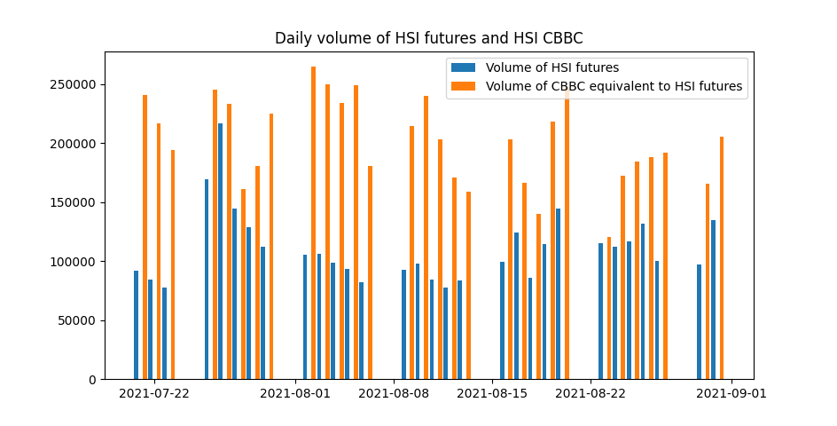
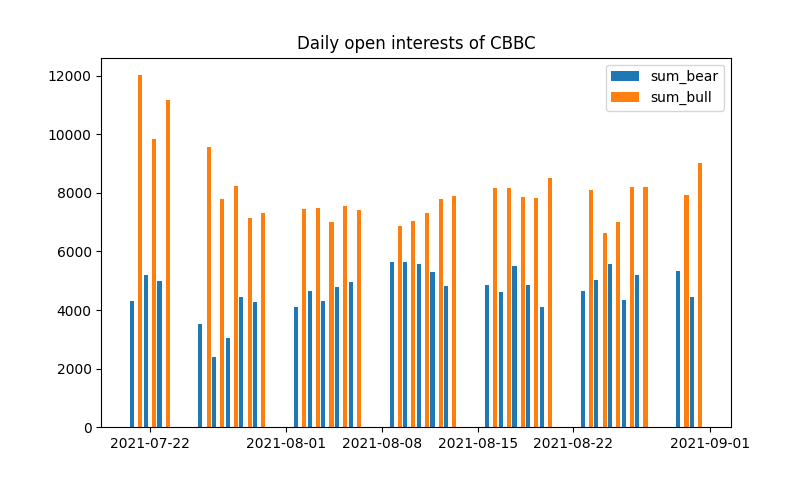
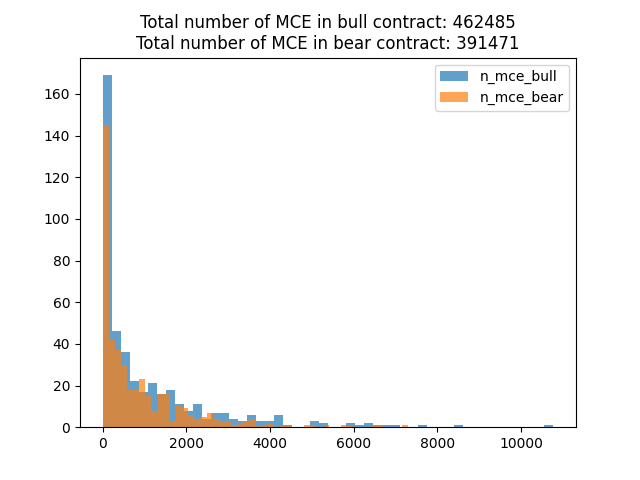
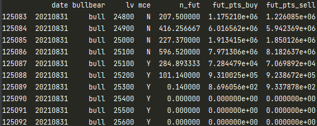
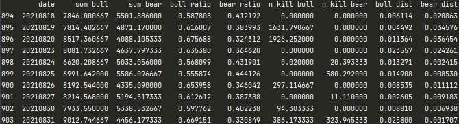
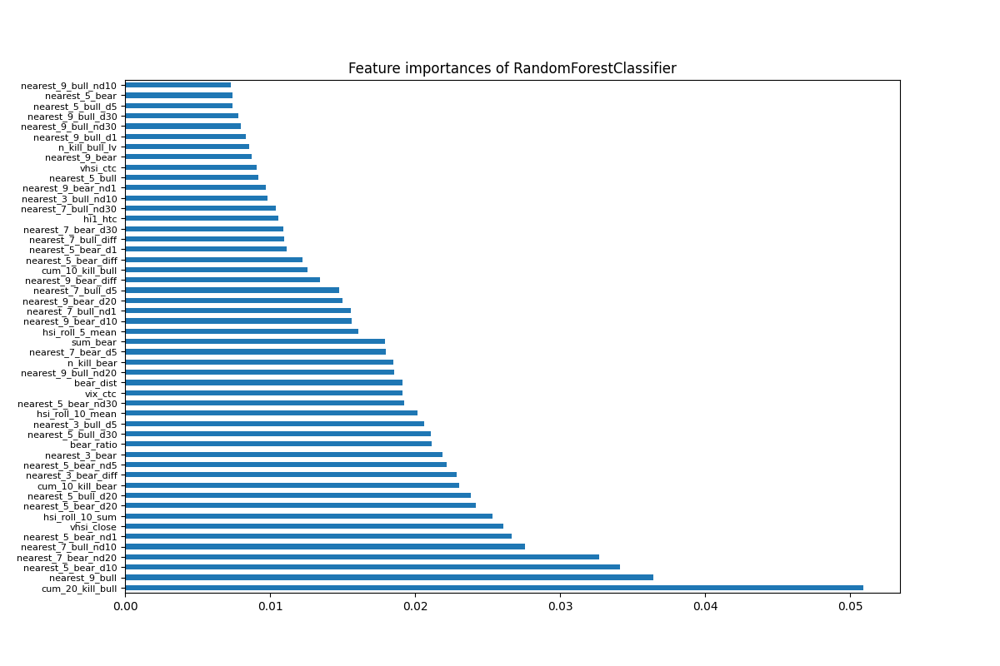
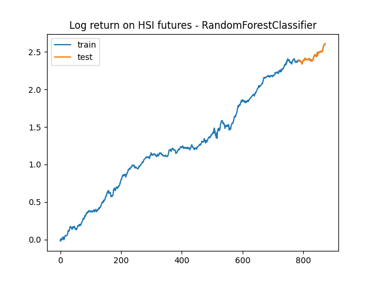
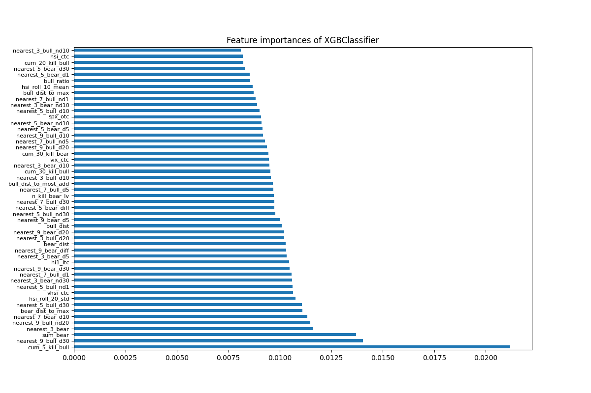
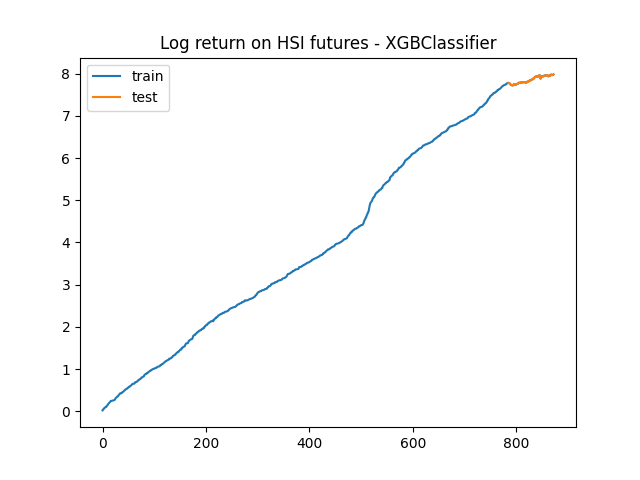
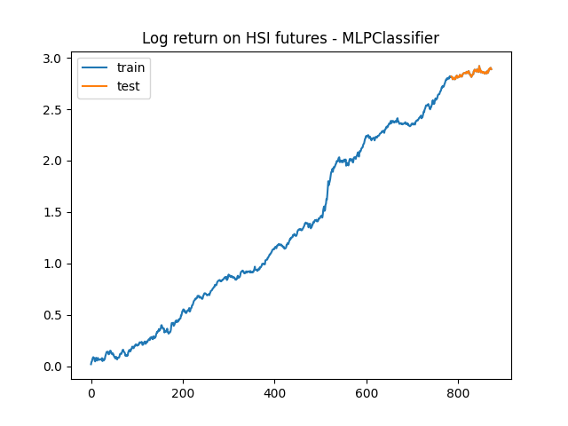

Introduction
CBBC is an option like structured product, they are popular in Hong Kong market, it also considered as a market indicator by many retail investors in Hong Kong, the purpose of this article is to investigate whether CBBC data have predictive power to predict the direction of HSI futures.
In this article, we are going to investigate CBBC data and try to predict the direction of HSI futures closing price one day ahead. We will visualize the data, then predict the direction of HSI price using various models, finally make use of the prediction. If you are not familiar with CBBC, you can read the overview in HKEX of structured product.
Data
The dataset consists of 874 days of HSI CBBC data, which was collected from HKEX, for those who are interested in the data, please visit HKEX-Download Historical Data by Month for all CBBC. Before we build our prediction model, we would like to understand our data.
 Daily volume of HSI CBBC equivalent to HSI futures in last 30 days  Daily CBBC open interests in last 30 days  Mandatory call event occurred in bull or bear contract in one day.Feature Engineering
In this section, we will create new features from our knowledge in finance, to help our prediction model, however, it would be too long to go through all the new features, so we will only briefly discuss this step. The original data from HKEX after preprocessing will look like this.
We will aggregate the number of bull and bear contracts each day, the column will call sum_bull and sum_bear.
Some retail investors believe that if sum_bull > sum_bear, then HSI is likely to drop since the institutional investors will manipulate the market and make a profit by triggering mandatory call events, therefore, we can calculate the ratio of bull and bear contract, call bull_ratio and bear_ratio. Then, we will sum the number of daily mandatory call events, and call "n_kill_bull" and "n_kill_bear".
We can also calculate the distance between HSI and the nearest bull and bear contract, and they call bull_dist and bear_dist.
The market may memorize some past information, therefore some rolling statistics can be created, but we are not going to show all of it.
 Data after feature engineeringModels and Predictions
The models that we use in this article are RandomForestClassifier, XGBClassifier, and MLPClassifier. RandomForestClassifier and XGBClassifier are tree-based models, which is easy to train and interpret the model, however, they will overfit quickly. While MLPClassifier is neural network based model, it has high flexibility but is less interpretable.
For RandomForestClassifier and XGBClassifier, we will perform the following steps.
- Split our data, 90% training data, and 10% test data.
- Search hyperparameters by using GridSearchCV, use accuracy as our metric.
- Cross-validate the model by TimeSeriesSplit.
- Train the model using the best hyperparameters.
- Select the best 50 features from feature_importances_.
- Search hyperparameters again and train the final model.
The mean accuracy on RandomForestClassifier of 5 splits on TimeSeriesSplit is 0.50769. In the training set, the accuracy is 0.66624, and it is 0.65909 in the test set.
 The mean accuracy on XGBClassifier of 5 splits on TimeSeriesSplit is 0.55231. In the training set, the accuracy is 0.9949, and it is 0.625 in the test set.
 For MLPClassifier, we will perform the following steps.
- Split our data, 90% training data, and 10% test data.
- Standardize features by using StandardScaler
- Search hyperparameters by using GridSearchCV, use accuracy as our metric.
- Cross-validate the model by TimeSeriesSplit.
- Train the final model using the best hyperparameters.
The mean accuracy on MLPClassifier of 5 splits on TimeSeriesSplit is 0.53231. In the training set, the accuracy is 0.68026, and it is 0.54546 in the test set.
Conclusion
We apply 3 different models to predict the direction of HSI futures, those model shows that CBBC data of HSI may have prediction power, the number of mandatory call event seems to be important to predict HSI movement. In the next article, we will further investigate ensembles and model stacking of those three models, to test whether we can have higher accuracy by combining those models.